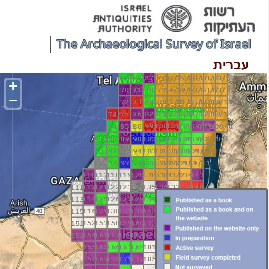
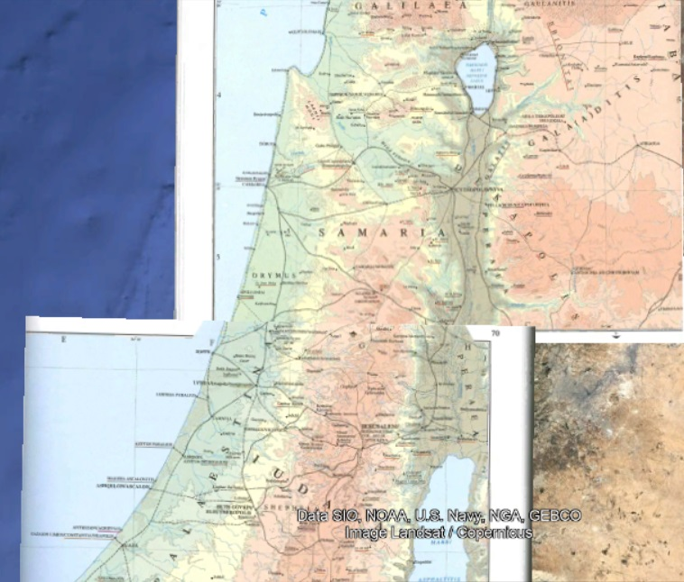
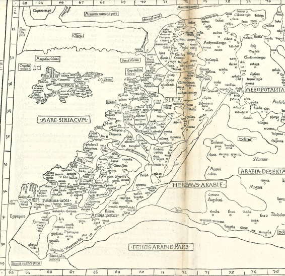
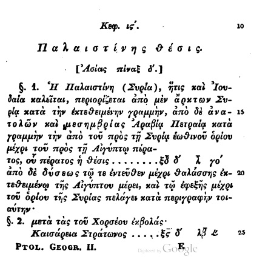
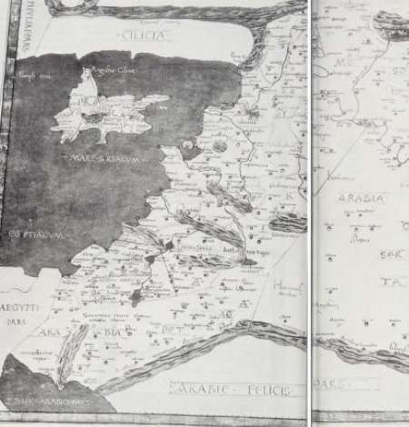
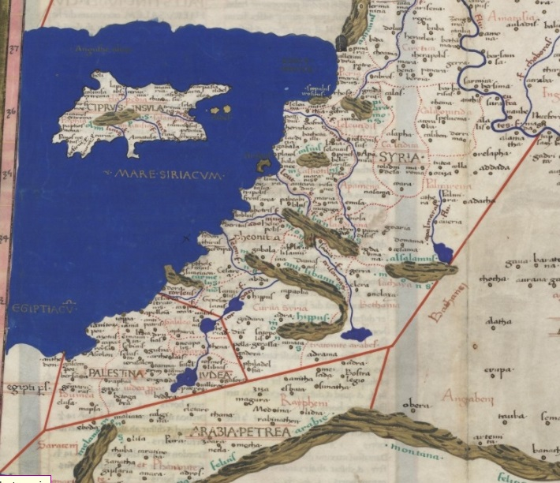

Google Earth .KMZ plots of 📍ancient places.

| Edition | Date | Link |
|---|---|---|
| 1.3 | Nov. 13, 2022 | Click here |
| 1.2 | July 23, 2022 | Click here |
| 1.1 | June 13, 2022 | Click here |
| 1.0 | April 6, 2022 | Click here |
| Name etc. | Edition | Link | |
|---|---|---|---|
| [Book] Anne Catherine Emmerich's Life of Jesus Christ 1824 A.D. (First pub. 1914) |
English (Originally German); written by Clement Brentano; ed. Rev. Carl E. Schmöger | Click here | |
|  | [Website] Archaeological Survey of Israel (pub. continually) |
English; pub. Israel Antiquities Authority | Click here |
|  | [Atlas] Barrington Atlas of the Greek and Roman World (pub. 2000) |
English; pub. Princeton University Press. | Click here; page 192 |
|  | [Map] Ptolemy's Geographica 150 A.D. (pub. 1482) |
Latin; trans. Jacobus Angelus; ed. Nicolaus Germanus. | Click here; click download link; page 192 |
|  | [Index] Ptolemy's Geographica 150 A.D. (pub. 1845) |
Greek; ed. Karl Friedrich August Nobbe; pub. Caroli Tauchnitii. | Click here; click download link; pp. [Book's numbering] (Palestina); 74-77 & 97-108 (Arabia) |
|  | [Map] Ptolemy's Geographica 150 A.D. (pub. 1991) |
Latin; trans. & ed. Edward Luther Stevenson. Pub. Dover, New York | Click here; (page 268) |
|  | [Map] Ptolemy's Geographica 150 A.D. (pub. 1467) |
Latin; trans. Jacobus Angelus; ed. Nicolaus Germanus. | Click here |

{kind=link}